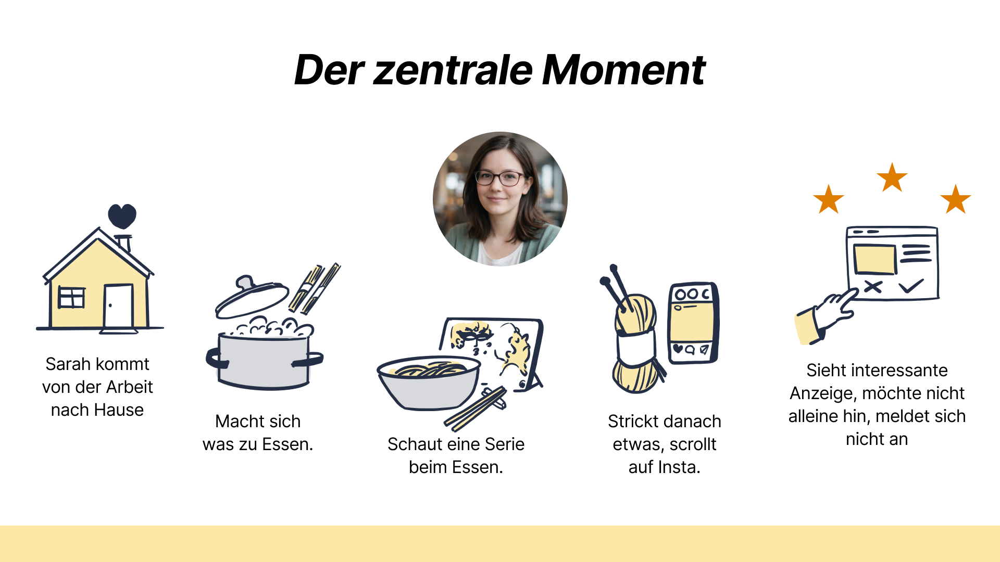
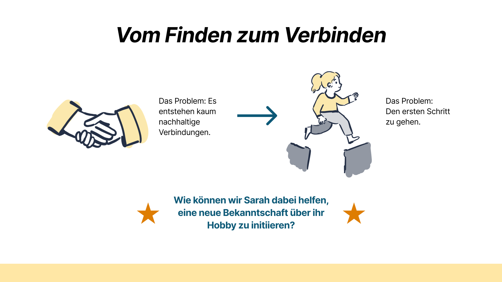
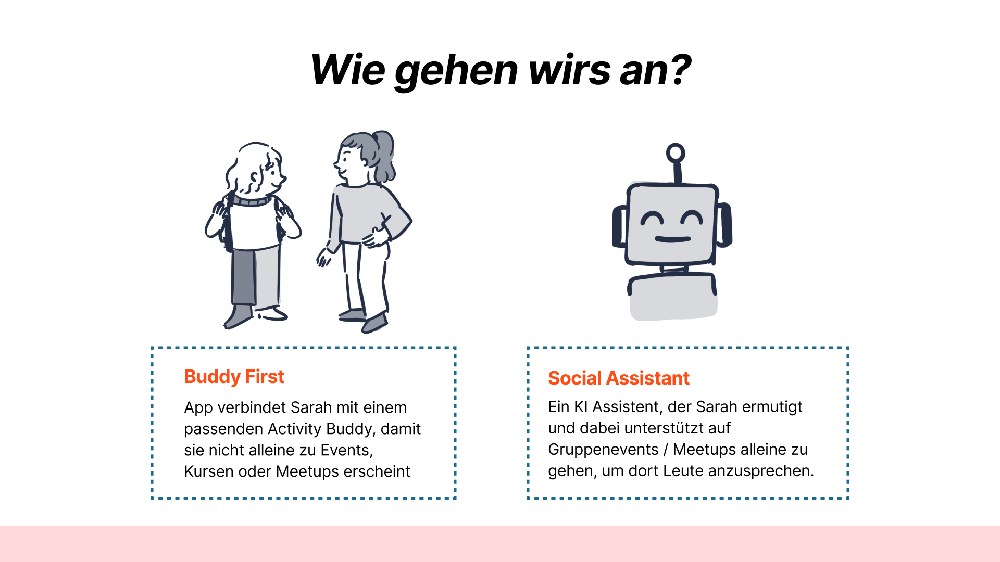
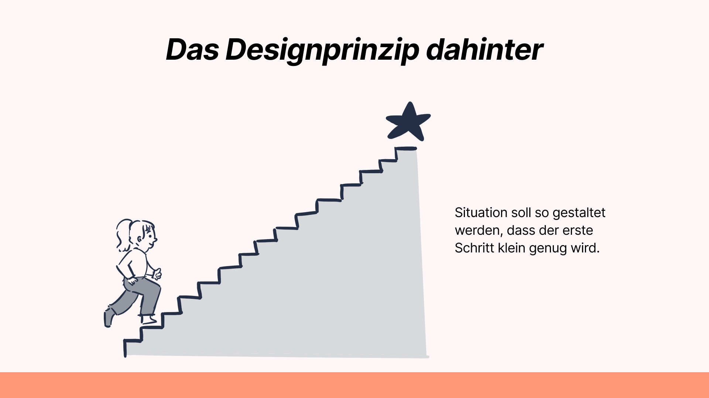
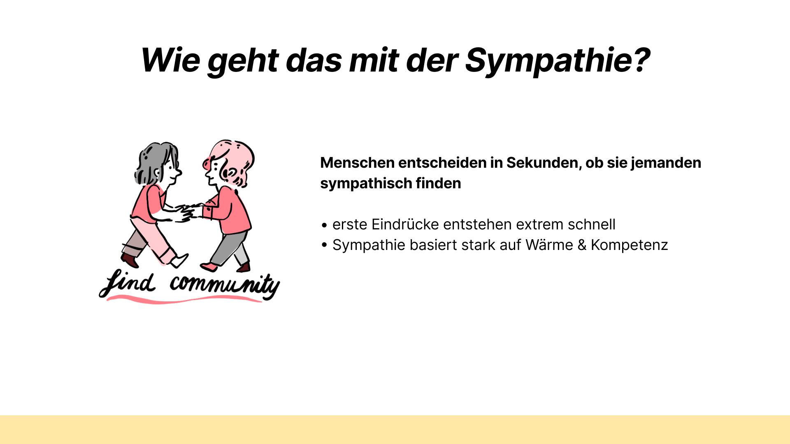
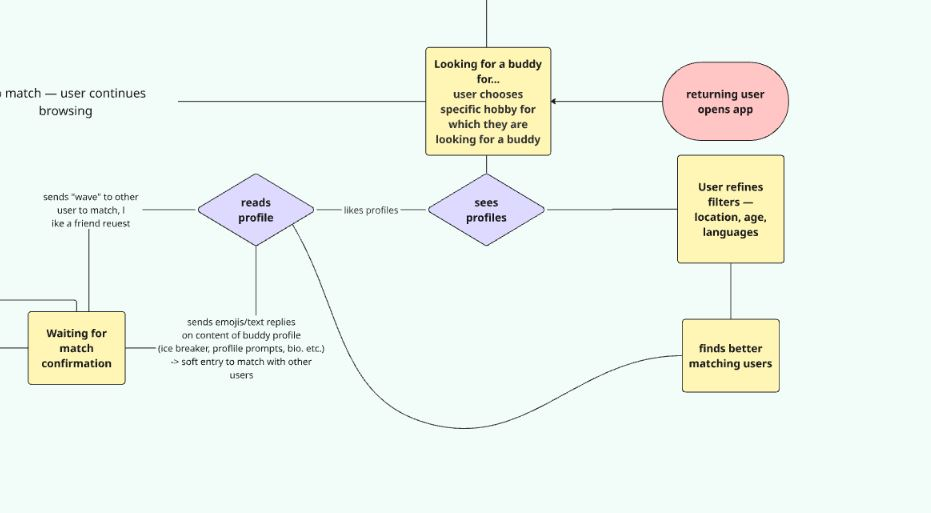
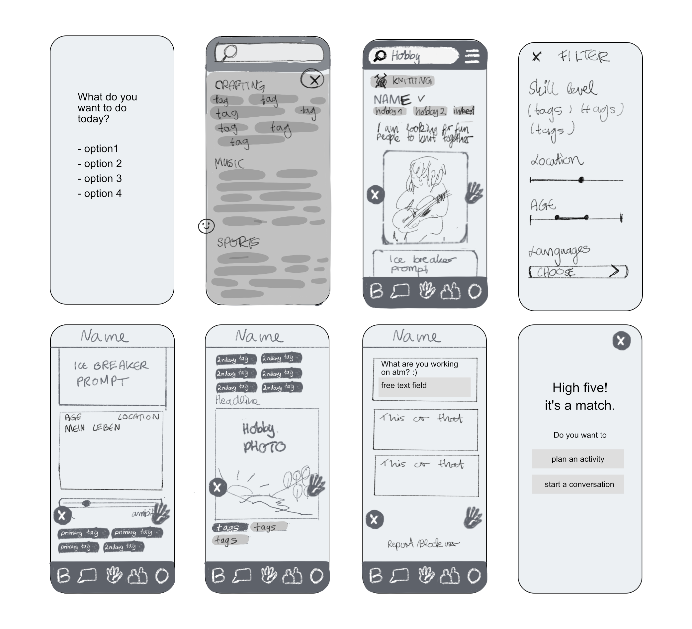
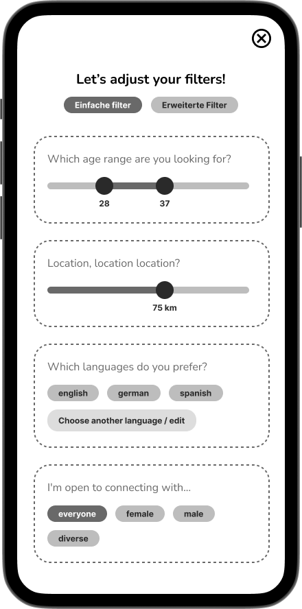
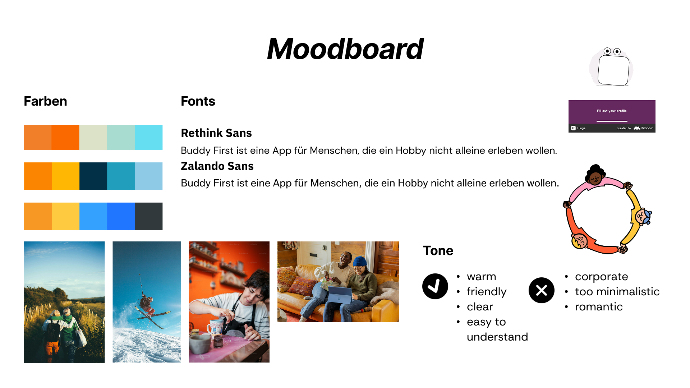

Why this problem matters
People want connection more than ever, yet struggle to actually build it.
In recent years, loneliness has been increasingly recognised as a societal issue, not because people are alone, but because meaningful, consistent connections are missing. Studies highlight a growing experience of "social thinning": people have acquaintances, but lack regular shared experiences.
At the same time, platforms like Meetup show a clear trend: people actively seek connection through shared hobbies and group activities, especially between the ages of 25 and 35, when social structures like university or school naturally fade.
People don't avoid events because they don't want to go.
They avoid them because they don't want to go alone.
This led me to explore a key question: why do so many social interactions never turn into real, lasting connections? I was particularly interested in the moment where intention turns into action, because that is where most connections seem to fail.
Research
3 interviews. 21 survey participants. One clear pattern.
"My worst fear is that everyone is already talking to each other and I end up standing alone."
The barrier is not access. It is uncertainty.
Key Insights
Finding people is not enough.
Users struggle to find the right person and to take the first step. Three layers emerged:
Discovery
Context and life situation matter as much as shared interests.
Behaviour
Even with a good match, people hesitate to act.
Core
The gap between matching and meeting is where connections fail.
Persona
Sarah: the user at the centre.
Sarah, 33
Data Science Consultant,
recently moved to Hamburg
K-Pop, Escape Rooms, Hiking. Not shy. She just needs the situation to feel safe before taking the first step.
- Recently moved, social network reset
- Wants to meet people through hobbies
- Hesitates in unfamiliar group situations
- Sees an event she'd enjoy, and doesn't go

Problem Reframing
People don't struggle to find opportunities. They struggle to act on them.
HMW: "How might we help Sarah initiate a new connection through her hobby without the fear of showing up alone?"

From Insight to Decision
How research shaped the product.
| Insight | What it means | Decision |
|---|---|---|
| Initiating is harder than finding people. | The barrier is the first step, not discovery. | Match people before they attend, so no one shows up alone. |
| Shared hobbies alone don't make a good match. | Time, motivation, and life stage matter too. | Profile elements that show intent and availability, not just interests. |
| People aren't ready to meet strangers immediately. | Trust builds before commitment to real-life interaction. | Lightweight signals before suggesting a meetup. |
| One-sided effort kills groups. | Connection requires both sides to engage. | Features that reward reciprocal interaction. |
Opportunity
What if we reduce the barrier of the first step?

The Solution
Buddy First instead of Event First.
Most platforms are event-first: sign up and hope someone will be there.
Buddy First flips this: find one person first, then go together.
Design Principle
Break large social steps into smaller, manageable actions.
Smaller steps reduce uncertainty. Clarity increases action. People change when the situation changes, not when they're told to act differently.

Competitor Analysis
Person-first, not event-first.
Most platforms send people to events and hope for the best. The analysis also surfaced dark patterns that increase anxiety rather than reduce it.
✗
FOMO pressure via missed event notifications
✗
Excessive push notifications
✗
Key features behind paywall
Profile Design
Warmth before competence.
Warmth is assessed before competence. So the profile leads with an icebreaker prompt, not a photo. Personality and intention before appearance.

Warmth before competence
Profile structure: icebreaker, photo, tags (life stage, commitment, ambition), hobby photo.
Not like Bumble
Dating apps lead with photos. Buddy First leads with personality and intent. Appearance comes second.
User Flow
From discovery to real interaction.
The product guides users through a structured, low-pressure flow. Five navigation sections, each mapping to one concrete user need.

Wireframes
From idea to first prototype.
MVP flow: find a person, make contact, go together. No features added for feature's sake.

Key Interaction Moments
The product in action.
Four screens show the core flow: browse and scroll, filter by context, match, and send an activity invitation.




The waiting state as an anxiety problem
After Sarah sends a Wave, uncertainty kicks in. I designed this moment explicitly: Sarah can keep browsing while waiting. The state is productive, not empty.
Visual Direction
Warm, approachable, low-pressure.
The visual direction reflects a safe and comfortable social experience. The tone avoids dating-app aesthetics and corporate minimalism. It should feel like something you would actually want to use on a quiet evening.

Usability Testing
Testing assumptions with real users.
I ran usability tests using a structured test script. Scenario: "You just moved to Munich and want to find someone who also knits." Tests run without guiding participants. Two central questions guided the sessions: does the profile create a genuine desire to reach out, and is the transition from match to meetup clear?
Key finding
Users do not want to be pushed into meeting immediately. They want to build familiarity first. A gradual transition increases willingness to meet.
Design Ethics
Design with a stance.
Every design decision has an ethical dimension. I made four commitments from the start.
No FOMO pressure
No notifications about missed events or social pressure tactics
Core features for everyone
No key functionality hidden behind a paywall
Cognitive accessibility
Few decisions at once, clear language, minimal cognitive load
Considered invitations
Matching based on intent, not mass outreach or spam
Success Metrics
How is success measured?
Engagement
Does a match lead to a meetup?
Match and chat: app tracking
In-app survey "Did you meet up?"
Retention
Does a first meetup lead to another?
In-app survey "Did you go together?"
Tracking when same pair matches again
What I learned
UX Research: conducting and synthesising qualitative interviews, surveys and affinity mapping
Problem Reframing: having the courage to let go of the original question when research points elsewhere
Psychology in Design: applying behavioural psychology to profile design and friction reduction
Usability Testing: running structured tests and validating assumptions with real users
Design Ethics: making explicit decisions against dark patterns